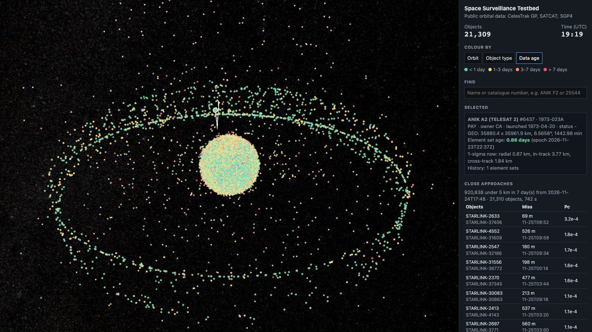
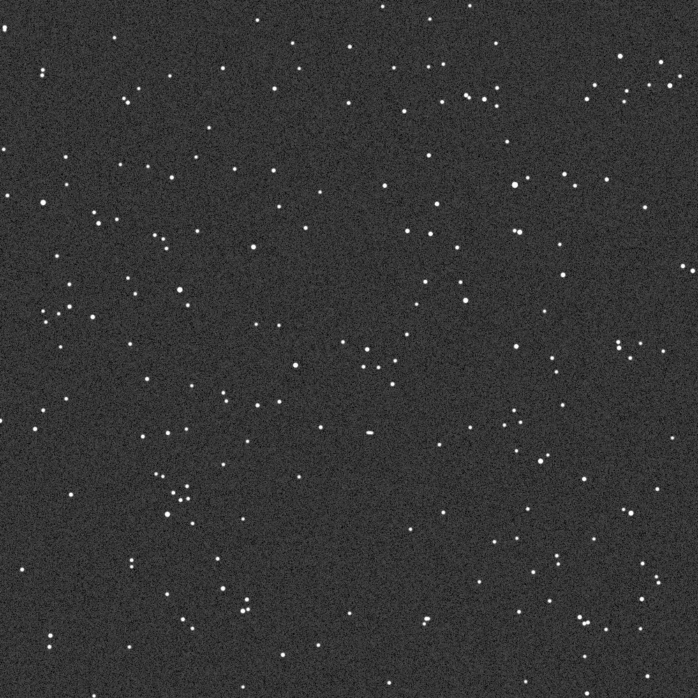
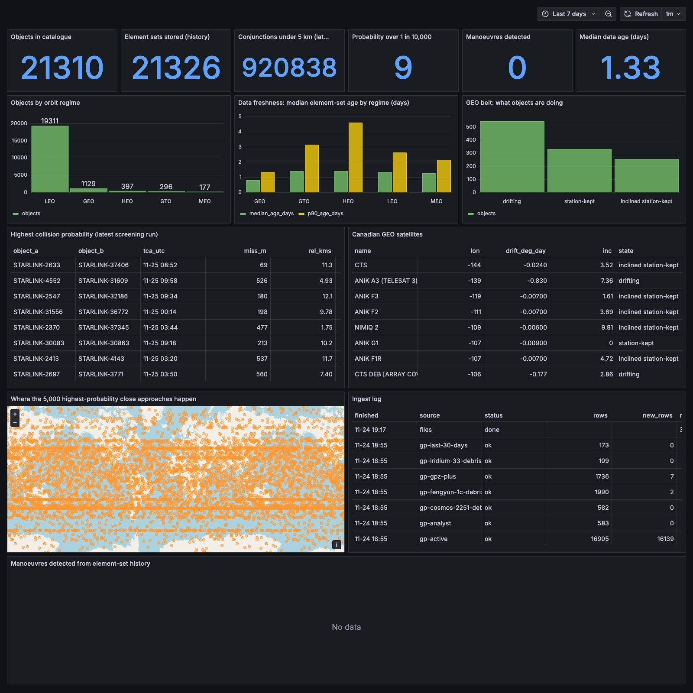

Space Surveillance Testbed: Tracking the Catalogue from Public Data
A space situational awareness platform shaped by the Surveillance of Space 2 project: 21,310 objects from public orbital data with their history, conjunction screening checked against CelesTrak's SOCRATES on identical inputs, uncertainty measured instead of assumed, a watch over the geostationary belt and Canada's satellites in it, and a ground-based optical sensor that measures them independently.
Overview
The Space Surveillance Testbed tracks everything in the public orbital catalogue, from the International Space Station to debris from satellites destroyed decades ago, using only public data. It keeps every element set it has ever fetched, screens for close approaches, measures how far the public data can be trusted, and watches the geostationary belt where Canada's communications satellites live.
The DND project, listed in the Defence Capabilities Blueprint at $250 million to $499 million, will procure sensors that detect, track, characterise and monitor deep-space objects: the follow-on to the Sapphire satellite, so the RCAF can keep protecting Canadian deep-space assets and contributing to the Space Surveillance Network. This build does the ground-segment half at hobby scale (the catalogue, the screening, the characterisation) and designs the sensor half as a camera on a tracking mount.
Every number on this page was checked against something independent. The conjunction screen was run on exactly the inputs CelesTrak's SOCRATES service used: it found 917 of 917 of its conjunctions in the test window, with times of closest approach within a millisecond. The uncertainty model comes from comparing the public data with operators' own orbits and with NASA's ISS ephemeris.
Repository: github.com/TYFSADIK/sos2-testbed (MIT licence; orbital data from CelesTrak and NASA, fetched by the scripts, not redistributed).
The DND Project
From the public entry in the Defence Capabilities Blueprint, managed by the Directorate of Capability Integration at National Defence (read from the archived page of February 2026).
| Item | Public detail |
|---|---|
| Project | Surveillance of Space 2 (SofS 2), new and replacement |
| Objective | National space situational awareness, strategic relevance and allied burden sharing: deep-space surveillance to protect Canadian deep-space assets, mission assurance for space capabilities the CAF relies on, and an active Canadian contribution to the Space Surveillance Network |
| Requirement | A system of sensors that can detect, track, characterise and monitor deep-space Earth-orbiting artificial objects; the follow-on to the Sapphire satellite |
| Funding range | $250 million to $499 million |
| Options analysis / definition | Completed / in progress |
| Start of implementation | 2025/2026 |
| Initial / final delivery | 2026/2027 / 2031/2032 |
| Capability areas | Air; Space; Surveillance and Reconnaissance |
| Investment areas | Earth-based support systems; satellite subsystems; surveillance of and from space; support and monitoring systems; photonics; surveillance integration tools; tracking systems |
| Key industrial capability | Space Systems |
Requirement by Requirement
| Need | In this build |
|---|---|
| Import public orbital elements | CelesTrak GP element sets for active satellites, the GEO protected zone, three debris clouds, recent launches and analyst objects, plus the satellite catalogue (owner, launch, type, size); the ingest respects CelesTrak's two-hour update cycle |
| Positions over time, orbit paths | Vectorised SGP4 (about 2.5 million positions a second), on a CesiumJS globe |
| Satellite metadata | Name, owner, launch date, object type, size, orbit, operational status |
| Historical position changes | Every element set ever fetched kept in PostgreSQL; changes between consecutive sets that drag cannot explain are flagged as manoeuvres |
| Close approaches | Screening of active payloads against everything, collision probability; validated against SOCRATES |
| Uncertainty and freshness | Element-set age for every object; uncertainty measured per orbit regime against operator orbits and NASA's ISS ephemeris |
| Detect, track, characterise deep-space objects (SofS 2) | GEO belt characterisation (station-kept, inclined, drifting), the neighbours of every Canadian GEO satellite, and an optical sensor pipeline that measures GEO satellites independently and flags unknown objects and manoeuvres |
| Grafana | A catalogue health dashboard: size, freshness, conjunctions, GEO belt, Canadian satellites, ingest log, manoeuvres |
The Platform

Close Approaches
The screen follows the shape of operational tools, sized for a laptop: propagate everything every 20 seconds, use a k-d tree to find pairs that could close within 5 km before the next step, estimate the closest approach from relative motion, and only then refine the survivors with SGP4 itself. Pairs that never separate, such as the ISS's modules and the spacecraft docked to it, are reported as co-located, not as conjunctions.
Two tests, both on public data. First, on exactly the element sets SOCRATES used, every one of its conjunctions in the test hour was found (917 of 917), with times of closest approach within 0.8 ms and miss distances within half a metre, which is SOCRATES's own rounding. Five more turned up that SOCRATES did not list; they are real under SGP4 and the cause is not determined. Second, a full seven-day screen of 21,310 objects (16,901 active payloads) ran in 12 minutes on a laptop. Its rates match SOCRATES for Starlink against other objects (432 an hour against 498) and for everything else once the smaller catalogue is allowed for. For Starlink against Starlink it finds 4,903 an hour where SOCRATES lists 182. My first explanation, that public elements are too inaccurate inside a manoeuvring constellation, was tested and rejected: switching to SpaceX's own published orbits made the number larger. That gap is reported as unresolved. Probabilities use the measured uncertainty; nine encounters in the week come out above 1 in 10,000, all between Starlink satellites, which SpaceX's own avoidance system handles.
How Wrong Is the Catalogue?
A public element set is a compact fit, not a measurement, and it gets worse every day after its epoch. Instead of assuming how much, the testbed measures it: catalogue predictions against orbits fitted to the operators' own data (Starlink, GPS, Intelsat, SES, Telesat, EUMETSAT, laser-ranging targets) and against NASA's published ISS ephemeris.
Against operator orbits, the median error of a public element set under six hours old is 1.0 km in low orbit, 0.4 km in medium orbit and 2.0 km in the geostationary belt. After one to two days it is 13.6 km, 1.2 km and 6.8 km. Low orbit gets worse fastest because the satellites that dominate it, Starlink, fly low in heavy drag and manoeuvre often: 41% of samples two to three days old are off by more than 50 km. Against NASA's ephemeris, the ISS's element set stays under 1 km for three days and then drifts along its track, 85 km after two weeks. My first guess was a planned reboost; NASA's own orbit shows none, so the error is a small mismatch in predicted decay accumulating. The fitted model gives every object a live uncertainty, which the viewer shows and the collision probabilities use.
Deep Space and Canada's Satellites
Of 1,129 objects in the geostationary belt, 332 hold their slots, 254 hold longitude but let their inclination grow (a late-life fuel saving), and 543 drift: dead satellites, rocket bodies and debris. Twenty catalogued objects in the belt are Canadian: eight station-kept (Nimiq 4, 5 and 6, Anik G1 and the Telstar 11N, 12V, 18V and 19V), five inclined, and seven drifting, from the Anik A2 of 1973 to debris from the CTS experimental satellite. For each, the testbed propagates the whole belt for 24 hours and lists the objects that come closest. Anik F1R and Anik G1 share the 107.3 W slot and come within 37 km of each other; Nimiq 6's nearest neighbour is Galaxy 32 at 45 km; dead Aniks pass operating satellites at 100 to 200 km. That is exactly the watch the SofS 2 objective describes: protecting Canadian deep-space assets starts with knowing what is next to them.
An Optical Sensor
Surveillance of Space 2 is about sensors. The hobby-scale sensor is a 200 mm lens and an astronomy camera on a mount that tracks the stars: in two seconds stars are round and a geostationary satellite draws a short streak. The pipeline finds the stars, solves where the camera is pointing, subtracts the stars, measures each streak, and matches it to the catalogue, flagging anything uncatalogued and anything far from where its elements say it should be.

Rehearsed on 30 synthetic frames of the belt as seen from Toronto, with lens distortion, atmospheric seeing and catalogue error, and with the satellites drawn where their operators say they are (the pipeline never sees that): 29 frames solved (one rejected by a quality gate), satellites measured to 1.1 arcsec median (about 0.2 km at that distance), 89 of 96 detected, 88 identified with none wrong, 28 of 30 injected unknown objects flagged and 27 of 28 injected manoeuvres caught, with no false alarms. Magnitude-15 debris is beyond a 2 s exposure; two satellites sharing a slot 11 pixels apart merge. Real frames need a real star catalogue (Gaia) and clear Canadian skies.
Measured Results
| Check | Result |
|---|---|
| Screening vs SOCRATES, same element sets (958 conjunctions) | time of closest approach within 0.8 ms, miss within 0.5 m, relative speed within 0.5 m/s |
| Screening vs SOCRATES, same hour screened independently | 917 of 917 found; 5 more not listed by SOCRATES (cause not determined) |
| Seven-day screen, 21,310 objects | 12 minutes; per hour vs SOCRATES: Starlink vs others 432 / 498, others 146 / 260, Starlink vs Starlink 4,903 / 182 (unresolved) |
| Public element sets vs operator orbits, under 6 h old | LEO 1.0 km, MEO 0.4 km, GEO 2.0 km (median) |
| Same, 1 to 2 days old | LEO 13.6 km, MEO 1.2 km, GEO 6.8 km |
| ISS element set vs NASA's ephemeris | under 1 km for 3 days; 2.9 km at 5, 12.7 km at 7, 85 km at 14 |
| GEO belt | 1,129 objects: 332 station-kept, 254 inclined, 543 drifting; 20 Canadian |
| Optical sensor (30 synthetic frames) | 1.1 arcsec median, 2.6 arcsec 95th percentile; 89 of 96 detected; 88 identified, 0 wrong; 28 of 30 unknown objects and 27 of 28 manoeuvres flagged; 0 false alarms |
| Platform | all 21,310 positions in 85 ms; object detail in 2 ms; every refused download logged, none stored |

What the Rehearsal Found
| What happened | Why | What changed |
|---|---|---|
| The first catalogue download was 141 bytes | CelesTrak updates every two hours and answers repeat downloads with a notice | the notice is recognised, logged and never stored |
| The SOCRATES parser read only half the conjunctions, which looked like 476 extra ones of mine | alternate rows carry a shading attribute | fixed; a wrong hypothesis was tested and rejected on the way |
| The first validation could not see over-reporting | its catalogue held only objects SOCRATES listed | a per-hour comparison by object family against the full screen |
| Starlink against Starlink: 27 times SOCRATES's rate | not the accuracy of public elements: operator orbits made it larger | reported as unresolved |
| Operator orbits days ahead gave Starlink pairs 50 m apart at 1 in 2,000 | an assumed, far too small uncertainty | after a day, the measured model applies |
| Optical positions a constant 15 arcsec off, then a too-good 0.075 arcsec | start versus middle of the exposure; then an idealised sky | mid-exposure everywhere; distortion, seeing and catalogue error added |
| False streaks around double stars; one badly solved frame put every satellite in it 100 arcsec off | star-subtraction residuals; a partial plate match | length, bright-star and residual tests; a quality gate that rejects the frame |
The full list is in docs/04-findings.md.
How to Build It
- Data:
./local/fetch.shdownloads the public data politely (CelesTrak is a free service run by one person: it updates every two hours and refuses repeat downloads in between). - Platform:
./local/rehearse.sh upstarts PostgreSQL/PostGIS, the ingest, the API with the 3D viewer, and Grafana;testruns the full rehearsal. - Live:
MODE=livemakes the ingest fetch every two hours on its own, so the history and manoeuvre detection grow. - Sensor (about $2,100 CAD): a 135 to 200 mm lens, a ZWO ASI533MM camera, a tracking mount and a GNSS time receiver; the guide covers focus, timing and what a night of observing looks like.
Frequently Asked Questions
What is Surveillance of Space 2?
Surveillance of Space 2 is a National Defence project in the Defence Capabilities Blueprint to procure sensors that detect, track, characterise and monitor deep-space objects. It follows the Sapphire satellite and supports the protection of Canadian deep-space assets and Canada's contribution to the Space Surveillance Network, with a funding range of $250 million to $499 million.
Is this part of Surveillance of Space 2?
No. It is an independent open-source build shaped by the public description of the project, using only public data. It is not affiliated with or submitted to DND.
How accurate is public orbital data?
Measured here against operators' own orbits: a public element set under six hours old is typically about 1 km off in low orbit, 0.4 km in medium orbit and 2 km in the geostationary belt; after one to two days, about 14 km, 1 km and 7 km. Starlink, which manoeuvres often, is the worst case.
How do you know the conjunction screening is right?
It was run on exactly the element sets CelesTrak's SOCRATES service used. On the same pairs, times of closest approach agreed within a millisecond and miss distances within half a metre (SOCRATES's own rounding). Screening the same hour independently found every one of the 917 conjunctions SOCRATES listed in it.
Can a camera really track satellites?
Geostationary satellites are bright enough for a 200 mm lens and an astronomy camera in two seconds. In the rehearsal, on synthetic frames with lens distortion and atmospheric seeing, positions were measured to about one arcsecond, roughly 0.2 km at that distance. Real frames need a real star catalogue (Gaia) and clear skies.
What Happens Next
- Next: the optical sensor: lens, camera and mount, first frames of the Canadian GEO slots.
- Then: real reductions with Gaia astrometry, and short arcs that update a satellite's orbit from my own observations.
- Later: the full public catalogue through a Space-Track account, and the screening run every two hours in live mode.
Cite This Page
Citation formats
Plain text
Taki Sadik, "Space Surveillance Testbed: Tracking the Catalogue from Public Data", TYFSADIK, https://tyfsadik.org/work/defence/surveillance-of-space (accessed 2026-11-24).BibTeX
@misc{sadik-sos2-testbed,
author = {Sadik, MD. Taki Yasir Faraji},
title = {Space Surveillance Testbed: Tracking the Catalogue from Public Data},
year = {2026},
url = {https://tyfsadik.org/work/defence/surveillance-of-space},
urldate = {2026-11-24}
}APA
Sadik, M. T. Y. F. (2026). Space Surveillance Testbed: Tracking the Catalogue from Public Data. TYFSADIK. https://tyfsadik.org/work/defence/surveillance-of-space